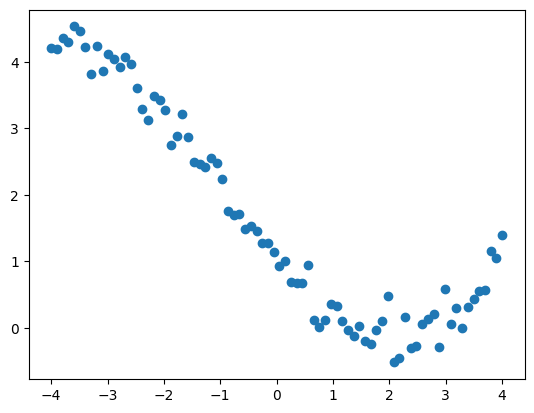
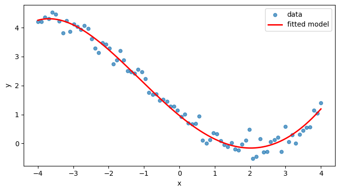
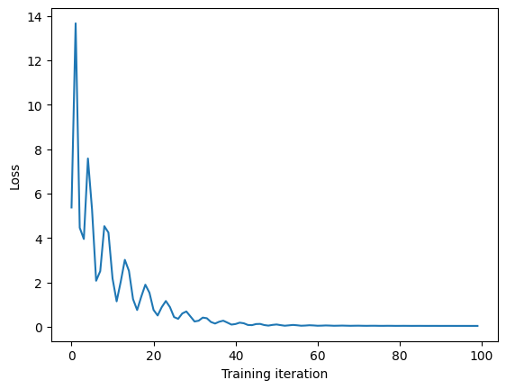

import torch
print(torch.cuda.is_available()) # Should print True on colabFalse
Python tutorials
W3Schools – Python tutorial
Short and very practical. Good for quickly checking syntax.
Official Python tutorial (docs.python.org)
More complete and more precise reference.
PyTorch
Official PyTorch tutorials
Well-structured tutorials that build up from basic tensor operations to full models.
PyTorch API documentation
Best place to look up exact behaviour of functions and classes.
Kaggle (practice and notebooks)
Kaggle Learn – micro-courses
Short interactive courses on Python, NumPy and machine learning.
Kaggle Notebooks
Useful for seeing complete end-to-end machine learning and PyTorch workflows.
Suggested use for this course:
Python is a high-level, general-purpose programming language that has become the de facto standard for machine learning and data science. Its popularity stems from its readable syntax, extensive ecosystem of libraries, and strong community support.
For this course, we will use Python alongside several key libraries:
There are several ways to run Python code:
For this course, we recommend using Google Colab, a free cloud-based Jupyter notebook environment provided by Google. Colab offers several advantages:
To run any notebook from this course in Colab:
Alternatively, you can upload any .ipynb file directly to Colab via File → Upload notebook.
A Colab notebook consists of cells, which can be either:
Shift+Enter or the play buttonSome useful keyboard shortcuts:
| Action | Shortcut |
|---|---|
| Run cell and move to next | Shift+Enter |
| Run cell and stay | Ctrl+Enter |
| Insert cell above | Ctrl+M A |
| Insert cell below | Ctrl+M B |
| Delete cell | Ctrl+M D |
Most packages you need are pre-installed, but if you require something else, run:
!pip install package-nameThe ! prefix runs shell commands from within a notebook.
Colab sessions are temporary. If your runtime disconnects (after ~90 minutes of inactivity, or ~12 hours maximum), you will need to re-run your cells. Any installed packages or uploaded files will need to be reinstalled/re-uploaded.
To save your work permanently, either:
For notebooks involving neural network training, enable GPU support:
You can verify GPU access by running:
import torch
print(torch.cuda.is_available()) # Should print True on colabFalsePyTorch is an open-source machine learning library developed by Meta AI. It provides two core features:
PyTorch has become the dominant framework in machine learning research due to its:
In the notation used in this course, a parameterised model is a family of functions
\mathcal{F} = \{ f_{\boldsymbol{\theta}} \}_{\boldsymbol{\theta}} .
Given a loss function
L\bigl(y, f_{\boldsymbol{\theta}}(\boldsymbol{x})\bigr),
and a dataset \{(\boldsymbol{x}_i, y_i)\}_{i=1}^n, we aim to learn parameters \boldsymbol{\theta} that minimise the empirical risk
\mathcal{R}_n(f_{\boldsymbol{\theta}}) = \frac{1}{n} \sum_{i=1}^{n} L\bigl(y_i, f_{\boldsymbol{\theta}}(\boldsymbol{x}_i)\bigr).
In practice, this optimisation problem almost never admits a closed-form solution and must be solved numerically using an iterative optimisation algorithm.
PyTorch provides direct support for each part of this pipeline:
Conceptually, the correspondence is:
| Mathematical object | PyTorch concept |
|---|---|
| parameters \boldsymbol{\theta} | tensors with requires_grad=True |
| model f_{\boldsymbol{\theta}} | nn.Module with a forward method |
| loss L | loss function |
| gradient \nabla_{\boldsymbol{\theta}} | computed automatically by autograd |
| optimiser | object from torch.optim |
A typical training step in PyTorch therefore mirrors the mathematical objective:
This tutorial will show how each of these mathematical components is implemented using PyTorch.
In PyTorch work you mainly use:
# numbers
x = 3 # int
y = 3.14 # float
# booleans
flag = True
# lists (ordered, mutable)
xs = [1, 2, 3]
# tuples (ordered, immutable)
shape = (32, 32)
# dictionaries (key–value)
config = {"lr": 1e-3, "batch_size": 64}Colab always uses imports.
import torch # main PyTorch library
import torch.nn as nn # neural network module
import torch.optim as optim # optimisation module (e.g. SGD, Adam)
import matplotlib.pyplot as plt # plotting library Alias style is standard:
import numpy as npAccessing a package:
torch.randn(10) # accessing torch
np.random.rand(10) # accessing numpy using its aliasarray([0.41922027, 0.59238886, 0.83599607, 0.9325504 , 0.31021581,
0.84021006, 0.40692659, 0.90587577, 0.02879064, 0.20226762])def square(x):
return x * x
print(square(5)) # Should print 2525In PyTorch, functions are mainly used to:
define the forward computation of a model
define loss functions or evaluation metrics
wrap parts of the training logic
The most important example is a model’s forward function:
def forward(self, x):
return self.linear(x)In PyTorch, loops are mainly used to iterate over data and training steps.
for-loop
for i in range(5):
print(i)0
1
2
3
4In this module, we typically perform a for-loop over training data. E.g.
for x, y in dataloader:
...while-loop
This is much rarer in PyTorch tutorials, but can be used when training is driven by a convergence or stopping criterion rather than a fixed number of epochs, for example:
while loss > tol:
...In Python, a class is used to bundle data and behaviour into a single object.
In other words, a class defines:
what data an object stores
what operations (methods) can be applied to it
Minimal example:
class Counter:
def __init__(self, value=0):
self.value = value
def step(self):
self.value += 1Minimal usage:
c = Counter()
c.step()
print(c.value)1c.step()
print(c.value)2Essential ideas:
__init__ is called when the object is created
self refers to the current object
attributes are created as self.something
methods are just functions that belong to the class
In PyTorch, a model is implemented as a class:
parameters (layers, tensors) are stored as attributes
the forward computation is defined as a method
A model is a Python class that inherits from nn.Module.
import torch.nn as nn
class Net(nn.Module):
def __init__(self):
super().__init__()
self.linear = nn.Linear(10, 1)
def forward(self, x):
return self.linear(x)Usage:
model = Net()
y = model(x) # calls forward internallyIf a layer or parameter is not assigned to self, PyTorch will not register it and it will not be trained.
The fundamental data structure in PyTorch is the tensor — a multi-dimensional array, analogous to a NumPy array, but with built-in support for GPU acceleration and automatic differentiation.
In practice, you should think of a PyTorch tensor in exactly the same way as a NumPy array.
From Python lists:
x = torch.tensor([1.0, 2.0, 3.0])From nested lists (matrices):
A = torch.tensor([[1.0, 2.0],
[3.0, 4.0]]) # shape (2, 2) - a tensor of rank 2 (a matrix)
B = torch.tensor([[[1.0, 2.0],
[3.0, 4.0]],
[[4.0, 6.0],
[8.0, 10.0]]]) # shape (2, 2, 2) - a tensor of rank 3 (a batch of matrices)Common initialisation routines (identical in spirit to NumPy):
x = torch.zeros(5)
y = torch.ones(3, 4)
z = torch.randn(10) # standard normal
A = torch.eye(3) # identity matrix
print(z)tensor([-0.5045, 0.5377, 1.8033, -0.8882, -1.4724, 0.6881, 0.3404, -0.2323,
-0.5028, -0.3703])From a NumPy array:
import numpy as np
a = np.array([1, 2, 3])
x = torch.from_numpy(a)
print(x)tensor([1, 2, 3])Like NumPy, tensors have a shape and a dtype:
x.shape
print(x.shape)
x.dtype
print(x.dtype)torch.Size([3])
torch.int64Just like in NumPy, or R, operations on PyTorch tensors are vectorised:
x = torch.randn(5)
y = torch.randn(5)
print(x)
print(y)
x + y
x - y
x * y
x / y
print(x + y)tensor([-0.1204, -0.0931, 0.8892, -2.5780, 1.4815])
tensor([-0.1331, -0.8201, 1.1084, -1.3394, -0.7245])
tensor([-0.2535, -0.9131, 1.9975, -3.9175, 0.7570])Scalar operations:
2.0 * x
x + 1.0
print(x + 1.0)tensor([ 0.8796, 0.9069, 1.8892, -1.5780, 2.4815])Matrix multiplication uses standard syntax conventions:
A = torch.randn(3, 4)
B = torch.randn(4, 2)
A @ Btensor([[ 2.4568, -1.7753],
[ 0.1665, 1.0247],
[ 2.5644, -0.6532]])Alternatively, a PyTorch specific way:
torch.matmul(A, B)tensor([[ 2.4568, -1.7753],
[ 0.1665, 1.0247],
[ 2.5644, -0.6532]])Indexing is identical to NumPy:
x = torch.randn(10)
x[0]
x[2:5]tensor([ 1.8608, 0.7837, -1.5691])For matrices:
Atensor([[ 0.7410, -2.2633, 0.9737, -1.5928, 1.0176],
[-0.4862, 0.1618, 1.7191, 0.3324, 0.8171],
[-1.4192, -0.0439, -0.7170, 0.4882, -0.5204],
[ 0.6129, 2.0961, 0.4827, -0.9906, 0.2413]])A[0,1]tensor(-2.2633)A = torch.randn(4, 5)
print("A: \n", A)
A[0, :]
print("A[0, :]: \n", A[0, :])
A[:, 1]
print("A[:, 1]: \n", A[:, 1])
A[1:3, 2:4]
print("A[1:3, 2:4]: \n", A[1:3, 2:4])A:
tensor([[-1.2290, 1.2304, 0.5908, 0.3963, 1.7227],
[ 1.1357, -0.7388, 1.3623, 0.0674, 0.2522],
[-0.1132, -0.9760, 0.3622, -0.5417, 0.3468],
[ 1.2598, -1.4888, 0.6890, 0.8857, -0.7124]])
A[0, :]:
tensor([-1.2290, 1.2304, 0.5908, 0.3963, 1.7227])
A[:, 1]:
tensor([ 1.2304, -0.7388, -0.9760, -1.4888])
A[1:3, 2:4]:
tensor([[ 1.3623, 0.0674],
[ 0.3622, -0.5417]])As in NumPy, reshaping does not copy data when possible:
x = torch.randn(12)
y = x.reshape(3, 4)
print("y: \n", y)y:
tensor([[ 0.9511, -0.5623, 1.1876, -2.6156],
[ 0.0402, -0.2292, 0.7698, -0.9850],
[ 0.3796, -1.2254, 0.1966, 0.2785]])Flattening:
y.flatten()tensor([ 0.4699, -0.4635, 1.4447, 0.4703, -0.6972, 1.8570, -0.7516, 0.0500,
1.2351, 0.5524, 0.3220, 0.2093])These reduction operations may also reduce a tensor by collapsing one dimension.
The most common examples are sum, mean, max, etc.
In PyTorch, the argument
dim = kmeans reduce along axis k (collapse that axis).
Example: a 2-D tensor
A = torch.tensor([[1., 2., 3.],
[4., 5., 6.]])
print("A: \n", A)A:
tensor([[1., 2., 3.],
[4., 5., 6.]])Its shape is
A.shape # [2, 3]torch.Size([2, 3])Think of the dimensions as:
There are three options of reducing here:
No dimension specified
A.sum()tensor(21.)All entries are summed and a single scalar is returned.
Reducing along dim=0
A.sum(dim=0) # tensor([5., 7., 9.])tensor([5., 7., 9.])Here:
we collapse dimension 0 (the rows)
we keep dimension 1 (the columns)
So each output entry is the sum down the rows:
\begin{bmatrix} 1 & 2 & 3 \\ 4 & 5 & 6 \end{bmatrix} \xrightarrow{\text{sum over dim 1}} \begin{bmatrix} 1+4, 2+5, 3+6 \end{bmatrix}
The output shape is:
A.sum(dim=0).shape # [3]torch.Size([3])Reducing along dim=1
A.mean(dim=1) # tensor([2., 5.])tensor([2., 5.])Here:
So each output entry is the sum across each row:
\begin{bmatrix} 1 & 2 & 3 \\ 4 & 5 & 6 \end{bmatrix} \xrightarrow{\text{sum over dim 1}} \begin{bmatrix} 1+2+3,4+5+6 \end{bmatrix}
The output shape is:
A.mean(dim=1).shape # [2]torch.Size([2])The key element that is new to PyTorch, and that you are unlikely to have seen before, is automatic differentiation.
In essence, we are allowed to treat complicated numerical code as a differentiable mathematical function and ask PyTorch to compute its derivatives for us automatically.
More precisely, suppose we define a scalar-valued function
F(\boldsymbol{\theta}) \in \mathbb{R}
using PyTorch tensor operations.
If the tensor \boldsymbol{\theta} is marked as requiring gradients, PyTorch can compute
\nabla_{\boldsymbol{\theta}} F(\boldsymbol{\theta})
exactly (up to floating-point error), using the chain rule.
Consider the function
F(\theta) = \theta^2 + 3\theta.
We can implement this directly in PyTorch:
import torch
theta = torch.tensor(2.0, requires_grad=True)
F = theta ** 2 + 3 * thetaTo compute the derivative, we call:
F.backward()The gradient is stored in:
theta.gradtensor(7.)which gives, since \theta = 2, \frac{dF}{d\theta} = 2\theta + 3 = 2 \times 2 + 3 = 7
Let us define a small function using several operations:
def f(theta):
return (theta**2).sum() + torch.sin(theta).sum()Now evaluate it at a vector:
theta = torch.randn(5, requires_grad=True)
loss = f(theta)
print("loss: \n", loss)loss:
tensor(4.2859, grad_fn=<AddBackward0>)Since loss is a scalar, we can compute its gradient with respect to theta:
loss.backward()The result is:
theta.gradtensor([ 0.3924, -0.2850, 3.2652, -4.4237, 1.9403])which contains \nabla_{\bm{\theta}} f(\bm{\theta}).
PyTorch’s automatic differentiation computes gradients of scalar outputs with respect to tensors.
In machine learning, this scalar is typically the empirical risk: \mathcal{R}_n(f_{\bm{\theta}}), where we wish to compute \nabla_{\bm{\theta}} \mathcal{R}_n(f_{\bm{\theta}}).
In order to use PyTorch’s automatic differentiation abilities, you must specify the tensor as requires_grad=True
That is, the following code will work:
x = torch.tensor(2.0, requires_grad=True)
f = x ** 2 + 3 * x
f.backward()
x.gradtensor(7.)The following will not:
x = torch.tensor(2.0) # requires_grad=False is the default
f = x ** 2 + 3 * x
f.backward()
x.grad # RunTime errorPyTorchWe will use the polynomial regression model
f_{\boldsymbol{\theta}}(x) = \theta_0 + \theta_1 x + \theta_2 x^2 + \theta_3 x^3 + \theta_4 x^4,
where \boldsymbol{\theta} = (\theta_0,\theta_1,\theta_2,\theta_3,\theta_4) are the learnable parameters.
In PyTorch, models are implemented as classes that inherit from nn.Module.
The key method is forward, which defines how inputs are mapped to outputs, i.e. it implements the function f_{\boldsymbol{\theta}}.
When you write
y_hat = model(x)PyTorch automatically calls
y_hat = model.forward(x)(plus some internal bookkeeping). This is why we always implement forward rather than calling it directly.
A convenient way to implement this model is to store the coefficients as learnable parameters and build the polynomial features inside forward.
import torch
import torch.nn as nn
class Poly4(nn.Module):
def __init__(self):
super().__init__()
# five learnable coefficients: theta_0, ..., theta_4
self.theta = nn.Parameter(torch.zeros(5)) # default values
def forward(self, x):
"""
x: tensor of shape (n,) or (n, 1)
returns: tensor of predictions, same shape as x (flattened to (n,))
"""
x = x.reshape(-1) # ensure shape (n,)
# build [1, x, x^2, x^3, x^4] for each data point
X = torch.stack([torch.ones_like(x), x, x**2, x**3, x**4], dim=1) # (n, 5)
return X @ self.theta # (n,)A quick sanity check:
model = Poly4()
x = torch.tensor([0.0, 1.0, 2.0])
y_hat = model(x)
y_hattensor([0., 0., 0.], grad_fn=<MvBackward0>)forward is doing (math to code)For input values x_1,\dots,x_n, define the design matrix
X = \begin{bmatrix} 1 & x_1 & x_1^2 & x_1^3 & x_1^4 \\ 1 & x_2 & x_2^2 & x_2^3 & x_2^4 \\ \vdots & \vdots & \vdots & \vdots & \vdots \\ 1 & x_n & x_n^2 & x_n^3 & x_n^4 \end{bmatrix} \in \mathbb{R}^{n \times 5}.
Then the model predictions are
\hat{\boldsymbol{y}} = X \boldsymbol{\theta}.
That is exactly what this line computes:
return X @ self.thetaWe now generate a small synthetic dataset from a known polynomial and fit the model defined above.
We will not discuss the optimisation details yet – this is only to show the full pipeline working end-to-end.
import torch
torch.manual_seed(0)
# ground-truth coefficients (theta_0 ... theta_4)
true_theta = torch.tensor([1.0, -2.0, 0.5, 0.3, -0.01])
def true_function(x):
X = torch.stack(
[torch.ones_like(x), x, x**2, x**3, x**4],
dim=1
)
return X @ true_theta
# training inputs
n = 80
x_train = torch.linspace(-4, 4, n)
# noisy observations
y_train = true_function(x) + 0.2 * torch.randn(n)Plotting:
import matplotlib.pyplot as plt
plt.plot(x_train, y_train, 'o', label='data')
model = Poly4()
loss_fn = torch.nn.MSELoss() # mean squared error loss
optimizer = torch.optim.Adam(model.parameters(), lr=0.05) # Adam optimiser with learning rate 0.05 - a form of SGD with momentum and adaptive learning rates
losses = []
for _ in range(100):
optimizer.zero_grad()
y_hat = model(x_train)
loss = loss_fn(y_hat, y_train)
loss.backward()
optimizer.step()
losses.append(loss.item())import matplotlib.pyplot as plt
# dense grid for a smooth curve
x_plot = torch.linspace(-4, 4, 400)
with torch.no_grad():
y_pred = model(x_plot)
plt.figure(figsize=(7, 4))
plt.scatter(x_train.numpy(), y_train.numpy(), s=25, alpha=0.7, label="data")
plt.plot(x_plot.numpy(), y_pred.numpy(), color='red', linewidth=2, label="fitted model")
plt.xlabel("x")
plt.ylabel("y")
plt.legend()
plt.tight_layout()
plt.show()
Plot loss over time:
plt.plot(losses)
plt.xlabel("Training iteration")
plt.ylabel("Loss")Text(0, 0.5, 'Loss')